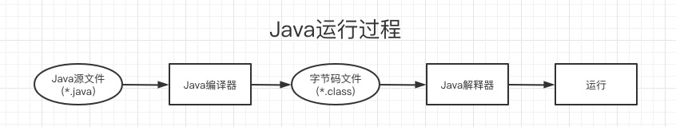

子曰：“由，诲女知之乎！知之为知之，不知为不知，是知也。” —— 春秋末期·孔子 《论语·为政》
一、收集
String a = "abc"和String b = new String("abc")- String a = “abc”是指在栈中创建一个string类的对象引用变量，然后查找栈中有没有存放”abc”，如果没有则将”abc”放入栈，并令a指向abc。
- new String(“abc”)是在堆中存放，每次new都会在堆中存放一个。
equals和==equals比较值是否相等==比较地址是否相等
@Transactional注解事务流程：- 当@Transactional注解的方法被外部的代码调用时，spring在运行时为方法所在类生成一个aop代理对象。
- 代理对象根据@transactional的属性，决定是否由事务拦截器TransactionInterceptor对此方法进行事务拦截。
- 在进行事务拦截时会先开启事务，然后执行业务代码，根据执行是否出现异常，通过抽象事务管理来进行rollback或者commit。
当事务方法被本类内部方法调用时，@Transactional注解并不生效，只有被当前类以外的调用时才会由spring生成的代理对象来管理。
mybatis与hibernate
- 共同点
- 都是通过orm对象关系映射框架
- 都是持久层数据框架
- 不同点
- Hibernate重量级框架，Mybatis是轻量级框架
- Hibernate对jdbc的封装比较深，对开发者写sql的要求高，只要通过hql语句操作对象即可完成数据的持久化操作
- Mybatis也是对jdbc的封装，但是没有H那么深，他的sql语句都在配置里，也可以通过重新配置里sql，来实现数据优化
- 处理大数据的时候，建议使用Mybatis，它优化sql更方便
- 共同点
RocketMq核心模块
- rocketmq-broker：接受生产者发来的消息并存储（通过调用rocketmq-stroe），消费者从这里取得消息
- rocketmq-client：提供发送、接收消息的客户端API
- rocketmq-namesrv：NameServer，类似于Zookeeper，这里保存着消息的TopicName，队列运行时的元信息
- rocketmq-common：通用的一些类、方法、数据结构等
- rocketmq-remoting：基于Netty4的client/Server + fastjson序列化 + 自定义二进制协议
- rocketmq-store：消息、索引存储等
- rocketmq-filtersrv：消息过滤器（一般用tag就可以）
- rocketmq-tools：命令行工具
RocketMq四大核心组成部分：NameServer、Broker、Producer以及Consumer。
- NameServer：主要负责对数据源的管理，包括了对于topic和路由信息的管理。
- 每个Broker在启动的时候都会到NameServer注册， Producer在发送消息前会根据Topic到NameServer获取到Broker的路由信息，Consumer也会定时获取Topic的路由信息。
- Producer：负责产生消息，一般是由业务系统负责产生消息
- Broker：责存储、转发消息
- Consumer：负责消费消息，一般是由后台系统负责异步消费，支持push和pull两种消费模式，支持集群消费和广播消费，提供实时的消息订阅机制
- Pull：拉取，主动从消息服务器拉取消息，只要批量拉取到消息，用户应用就会启动消费过程
- Push：推送，封装了消息的拉取、消费进度和其他的内部维护工作，将消息到达时执行的回调接口留给用户应用程序来实现。所有Push被称为被动消费；从实现上看还是从消费服务器中拉取消息，不同于pull的是push首先要注册消费监听器，当监听器触发后才开始消费消息。
- NameServer：主要负责对数据源的管理，包括了对于topic和路由信息的管理。
RocketMq提供了三种方式发送消息：同步、异步、单向。
- 同步发送：指消息发送方发出数据后会在收到接收方发回响应之后才发下一个数据包。一般用于重要通知消息，重要通知邮件，营销短信等
- 异步发送：指发送方发出数据后，不等待接收方发回响应，就发送下个数据包，一般用于对响应时间不敏感的业务
- 单向发送：值负责发送消息而不等待服务器的回应且没有回调函数触发，适用于某些耗时非常短但对可靠性要求并不高的场景，例如日志收集
创建线程安全的单例的几种方法
- 双检锁/双重校验锁
1 | public class Singleton{ |
- 登记式/静态内部类
1 | public class Singleton{ |
- 枚举
1 | public enum Singleton{ |
ArrayList就是一个数组列表，主要用来状态数据，如果装在的是基本数据类型（int、long、boolean、short、byte、double、char、float）的时候，只能存储他们对应的包装类,它的主要底层实现是数组与它类似是LinkedList、和LinkedList相比，它的查找和访问元素的速度较快，但是增删慢。
- 特点：查询效率高，增删效率低，线程不安全(线程安全的数组容器是Vector)，使用频率高。
ArrayList和LinkedList
- ① ArrayList是实现了基于动态数组的数据结构，LinkedList基于链表的数据结构。
- ② 对于随机访问get和set，ArrayList觉得优于LinkedList，因为LinkedList要移动指针。
- ③对于新增和删除操作add和remove，LinedList比较占优势，因为ArrayList要移动数据
ArrayList与Vector
- ①两个类都实现了List接口(List接口继承了Collection接口)，他们都是有序集合，都可以按位置索引号取出某个元素，并且其中的数据是允许重复的，这是HashSet之类的集合的最大不同处，HashSet之类的集合不可以按索引号去检索其中的元素，也不允许有重复的元素。
- ②同步性，Vector是线程安全的，也就是说是它的方法之间是线程同步的，而ArrayList是线程序不安全的，它的方法之间是线程不同步的。如果只有一个线程会访问到集合，那最好是使用ArrayList，因为它不考虑线程安全，效率会高些；如果有多个线程会访问到集合，那最好是使用Vector，因为不需要我们自己再去考虑和编写线程安全的代码。
- ③数据增长：ArrayList与Vector都有一个初始的容量大小，当存储进它们里面的元素的个数超过了容量时，就需要增加ArrayList与Vector的存储空间，Vector默认增长为原来两倍，而ArrayList的增长策略在文档中没有明确规定(从源代码看到的是增长为原来的1.5倍)。ArrayList与Vector都可以设置初始的空间大小，Vector还可以设置增长的空间大小，而ArrayList没有提供设置增长空间的方法。
Hashtable和HashMap
- ①继承不同。
1
2public class Hashtable extends Dictionary implements Map
public class HashMap extends AbstractMap implements Map- ②Hashtable中的方法是同步的，而HashMap中的方法在缺省情况下是非同步的。在多线程并发的环境下，可以直接使用Hashtable，但是要使用HashMap的话就要自己增加同步处理了。
- ③Hashtable中，key和value都不允许出现null值。在HashMap中，null可以作为键，这样的键只有一个；可以有一个或多个键所对应的值为null。当get()方法返回null值时，即可以表示 HashMap中没有该键，也可以表示该键所对应的值为null。因此，在HashMap中不能由get()方法来判断HashMap中是否存在某个键， 而应该用containsKey()方法来判断。
- ④两个遍历方式的内部实现上不同。Hashtable、HashMap都使用了Iterator。而由于历史原因，Hashtable还使用了Enumeration的方式 。
- ⑤哈希值的使用不同，HashTable直接使用对象的hashCode。而HashMap重新计算hash值。
- ⑥Hashtable和HashMap它们两个内部实现方式的数组的初始大小和扩容的方式。HashTable中hash数组默认大小是11，增加的方式是 old*2+1。HashMap中hash数组的默认大小是16，而且一定是2的指数。
javac/java/javap/jad/jar

javac：将源代码编程成class字节码文件的命令。
- 字节码是Java源文件由Java编译器编译后生成的目标代码文件，是一种和任何具体机器环境及操作系统环境无关的中间代码(一次编译到处运行)，它是一种二进制文件。
javac -h可查看其用法，常用：javac -d {path} Test.java指定class生成路径
java：用来启动一个Java应用的命令。
java -h可查看其用法，常用有如下两种：java [options] mainclass [args...]，直接运行生成的字节码文件java [options] -jar jarfile [args...]，运行jar包
javap：jdk自带的反解析工具，它的作用就是根据class字节码文件反解析出当前类对应的code区(汇编指令)、本地变量表、异常表和代码行偏移量映射表、常量池等等信息。
javap -h可查看其用法，常用如下：javap -v，不仅会输出行号、本地变量表信息、反编译汇编代码，还会输出当前类用到的常量池等信息。javap -l，输出行号和本地变量表信息。javap -c，对当前class字节码进行反编译生成汇编代码。
jad：
Java Decompiler，是一个Java的反编译器，可以通过命令行把class文件反编译成源代码。- Mac版本貌似不支持，试了多个版本均提示
bad CPU type in executable - 还有一个JD-GUI比较好用
java -jar jd-gui-1.6.6.jar- 从打开的gui窗口中添加
.class文件即可得到源代码
- Mac版本貌似不支持，试了多个版本均提示
jar：
Java Archive File，即Java档案文件，是一种压缩文件，与常见的ZIP压缩文件兼容，两者最大的区别是在JAR文件中默认包含一个名为META-INF/MANIFEST.MF的清单文件，这个文件是生成JAR文件时由系统自动创建的。- 当开发一个应用程序后这个应用程序包含了很多类，如果需要把这个程序提供给别人使用，通常会将这些类文件打包成一个JAR文件，把这个文件提供给别人使用，只要在别人系统的CLASSPATH环境变量中添加这个文件，则java虚拟机就可以自动在内存中解压这个jar包。
JDK是Java的开发工具，它不仅提供了Java程序运行所需的JRE，还提供了一系列的编译/运行等工具，如javac，java，javap等。
JRE只是Java程序的运行环境，它最核心的内容就是JVM及核心类库。
JVM即Java虚拟机，它是Java程序实现跨平台的最核心的部分，所有的Java程序会首先被编译为
.class的类文件，这种类文件可以在虚拟机上执行。
synchronizedMap/Hashtable
HashMap是一种存取高效但不保证有序的容器，数据结构是数组+链表+红黑树，是解决hash冲突的产物。
它实现了Map接口，采用kv键值对存储数据，并且实现了浅拷贝和序列化，默认大小是16，阈值是0.75，初始化大小必须是2的幂，最大是2的30次方，数组中存储的链表节点Entry类实现于Map.Entry接口，实现了对节点的通用操作。
java.util.concurrent包下的容器都是安全失败的，可以在多线程下并发使用，并发修改。
快速失败fail-fast是java集合中的一种机制，在用迭代器遍历一个集合对象时，如果遍历过程中对集合对象的内容进行了修改(增加、删除、修改)，则会抛出Concurrent Modification Exception。
- 原理：在遍历的过程中使用一个modCount遍历用来记录内容变化，如果发生变化，他的值就会改变，每当迭代器使用hashNext、next遍历下一个元素之前，都会检测modCount变量。
浅拷贝与深拷贝
- 查看Java字节码：Java字节码(英语：Java bytecode)是Java虚拟机执行的一种指令格式，大多数操作码都是一个字节长故称为字节码。
假设已经运行并生成了
Test.class文件
- 方式一：
vi/vimvim -b Test.class- 进入底角命令行模式，输入：
%!xxd
- 方式二：使用sublime
- 方式三：使用Hex Fiend
- 方式四：vs code
- 安装
hexdump插件 - 选中
Test.class文件右键，选择Show Hexdump
- 安装
二、链接
- GitHub-Chinese-Top-Charts
- JavaGuide
- 深入浅出 Java Concurrency
- Java全栈知识体系
- 如何深入学习Java并发编程
- java与C/C++之间通过jni相互调用
- Java：并发不易，先学会用
- fastthread.io
- heaphero.io
- gceasy.io
- jps
- EasyLog
- java多线程的几种实现方式
- java之spring注入的几种方式
- java线程池
- Java中sleep和wait的区别
A JNI error has occurred, please check your installation and try again，存在多版本时，如果环境变量设置不统一会出现此情况找不到或无法加载主类，当源文件中含有package时会出现此状况，一般解决方案是创建与包名相同的文件路径结构或删除包名(不建议)错误: 找不到符号，其中一种情况也是包名和文件路径不一致导致的，解决方法和上面一样
- 类A是公共的,应在名为A.java的文件中声明
- cosmos系统,CosmosDocs
- gnu
- nasm
- make
- grub
- intel-sdm
- Interactive map of Linux kernel
- 操作系统实战
- C语言程序设计：现代方法（第2版•修订版）
三、面试
Java 基础
- JDK和JRE 有什么区别？
- == 和 equals 的区别是什么？
- 两个对象的 hashCode()相同，则 equals()也一定为 true，对吗？
- final 在 java 中有什么作用？
- java 中的 Math.round(-1.5) 等于多少？
- String 属于基础的数据类型吗？
- java 中操作字符串都有哪些类？它们之间有什么区别？
- String str=”i”与 String str=new String(“i”)一样吗？
- 如何将字符串反转？
- String 类的常用方法都有那些？
- 抽象类必须要有抽象方法吗？
- 普通类和抽象类有哪些区别？
- 抽象类能使用 final 修饰吗？
- 接口和抽象类有什么区别？
- java 中 IO 流分为几种？
- BIO、NIO、AIO 有什么区别？
- Files的常用方法都有哪些？
容器
- java 容器都有哪些？
- Collection 和 Collections 有什么区别？
- List、Set、Map 之间的区别是什么？
- HashMap 和 Hashtable 有什么区别？
- 如何决定使用 HashMap 还是 TreeMap？
- 说一下 HashMap 的实现原理？
- 说一下 HashSet 的实现原理？
- ArrayList 和 LinkedList 的区别是什么？
- 如何实现数组和 List 之间的转换？
- ArrayList 和 Vector 的区别是什么？
- Array 和 ArrayList 有何区别？
- 在 Queue 中 poll()和 remove()有什么区别？
- 哪些集合类是线程安全的？
- 迭代器 Iterator 是什么？
- Iterator 怎么使用？有什么特点？
- Iterator 和 ListIterator 有什么区别？
- 怎么确保一个集合不能被修改？
多线程
- 并行和并发有什么区别？
- 线程和进程的区别？
- 守护线程是什么？
- 创建线程有哪几种方式？
- 说一下 runnable 和 callable 有什么区别？
- 线程有哪些状态？
- sleep() 和 wait() 有什么区别？
- notify()和 notifyAll()有什么区别？
- 线程的 run()和 start()有什么区别？
- 创建线程池有哪几种方式？
- 线程池都有哪些状态？
- 线程池中 submit()和 execute()方法有什么区别？
- 在 java 程序中怎么保证多线程的运行安全？
- 多线程锁的升级原理是什么？
- 什么是死锁？
- 怎么防止死锁？
- ThreadLocal 是什么？有哪些使用场景？
- 说一下 synchronized 底层实现原理？
- synchronized 和 volatile 的区别是什么？
- synchronized 和 Lock 有什么区别？
- synchronized 和 ReentrantLock 区别是什么？
- 说一下 atomic 的原理？
反射
- 什么是反射？
- 什么是 java 序列化？什么情况下需要序列化？
- 动态代理是什么？有哪些应用？
- 怎么实现动态代理？
对象拷贝
- 为什么要使用克隆？
- 如何实现对象克隆？
- 深拷贝和浅拷贝区别是什么？
Java Web
- jsp 和 servlet 有什么区别？
- jsp 有哪些内置对象？作用分别是什么？
- 说一下 jsp 的 4 种作用域？
- session 和 cookie 有什么区别？
- 说一下 session 的工作原理？
- 如果客户端禁止 cookie 能实现 session 还能用吗？
- spring mvc 和 struts 的区别是什么？
- 如何避免 sql 注入？
- 什么是 XSS 攻击，如何避免？
- 什么是 CSRF 攻击，如何避免？
异常
- throw 和 throws 的区别？
- final、finally、finalize 有什么区别？
- try-catch-finally 中哪个部分可以省略？
- try-catch-finally 中，如果 catch 中 return 了，finally 还会执行吗？
- 常见的异常类有哪些？
网络
- http 响应码 301 和 302 代表的是什么？有什么区别？
- forward 和 redirect 的区别？
- 简述 tcp 和 udp的区别？
- tcp 为什么要三次握手，两次不行吗？为什么？
- 说一下 tcp 粘包是怎么产生的？
- OSI 的七层模型都有哪些？
- get 和 post 请求有哪些区别？
- 如何实现跨域？
- 说一下 JSONP 实现原理？
设计模式
Spring/Spring MVC
- 为什么要使用 spring？
- 解释一下什么是 aop？
- 解释一下什么是 ioc？
- spring 有哪些主要模块？
- spring 常用的注入方式有哪些？
- spring 中的 bean 是线程安全的吗？
- spring 支持几种 bean 的作用域？
- spring 自动装配 bean 有哪些方式？
- spring 事务实现方式有哪些？
- 说一下 spring 的事务隔离？
- 说一下 spring mvc 运行流程？
- spring mvc 有哪些组件？
- @RequestMapping 的作用是什么？
- @Autowired 的作用是什么？
Spring Boot/Spring Cloud
- 什么是 spring boot？
- 为什么要用 spring boot？
- spring boot 核心配置文件是什么？
- spring boot 配置文件有哪几种类型？它们有什么区别？
- spring boot 有哪些方式可以实现热部署？
- jpa 和 hibernate 有什么区别？
- 什么是 spring cloud？
- spring cloud 断路器的作用是什么？
- spring cloud 的核心组件有哪些？
Hibernate
- 为什么要使用 hibernate？
- 什么是 ORM 框架？
- hibernate 中如何在控制台查看打印的 sql 语句？
- hibernate 有几种查询方式？
- hibernate 实体类可以被定义为 final 吗？
- 在 hibernate 中使用 Integer 和 int 做映射有什么区别？
- hibernate 是如何工作的？
- get()和 load()的区别？
- 说一下 hibernate 的缓存机制？
- hibernate 对象有哪些状态？
- 在 hibernate 中 getCurrentSession 和 openSession 的区别是什么？
- hibernate 实体类必须要有无参构造函数吗？为什么？
Mybatis
- mybatis 中 #{}和 ${}的区别是什么？
- mybatis 有几种分页方式？
- RowBounds 是一次性查询全部结果吗？为什么？
- mybatis 逻辑分页和物理分页的区别是什么？
- mybatis 是否支持延迟加载？延迟加载的原理是什么？
- 说一下 mybatis 的一级缓存和二级缓存？
- mybatis 和 hibernate 的区别有哪些？
- mybatis 有哪些执行器（Executor）？
- mybatis 分页插件的实现原理是什么？
- mybatis 如何编写一个自定义插件？
RabbitMQ
- rabbitmq 的使用场景有哪些？
- rabbitmq 有哪些重要的角色？
- rabbitmq 有哪些重要的组件？
- rabbitmq 中 vhost 的作用是什么？
- rabbitmq 的消息是怎么发送的？
- rabbitmq 怎么保证消息的稳定性？
- rabbitmq 怎么避免消息丢失？
- 要保证消息持久化成功的条件有哪些？
- rabbitmq 持久化有什么缺点？
- rabbitmq 有几种广播类型？
- rabbitmq 怎么实现延迟消息队列？
- rabbitmq 集群有什么用？
- rabbitmq 节点的类型有哪些？
- rabbitmq 集群搭建需要注意哪些问题？
- rabbitmq 每个节点是其他节点的完整拷贝吗？为什么？
- rabbitmq 集群中唯一一个磁盘节点崩溃了会发生什么情况？
- rabbitmq 对集群节点停止顺序有要求吗？
Kafka
- kafka 可以脱离 zookeeper 单独使用吗？为什么？
- kafka 有几种数据保留的策略？
- kafka 同时设置了 7 天和 10G 清除数据，到第五天的时候消息达到了 10G，这个时候 kafka 将如何处理？
- 什么情况会导致 kafka 运行变慢？
- 使用 kafka 集群需要注意什么？
Zookeeper
- zookeeper 是什么？
- zookeeper 都有哪些功能？
- zookeeper 有几种部署模式？
- zookeeper 怎么保证主从节点的状态同步？
- 集群中为什么要有主节点？
- 集群中有 3 台服务器，其中一个节点宕机，这个时候 zookeeper 还可以使用吗？
- 说一下 zookeeper 的通知机制？
Redis
- redis 支持的 java 客户端都有哪些？
- jedis 和 redisson 有哪些区别？
- 怎么保证缓存和数据库数据的一致性？
- redis 如何做内存优化？
- redis 常见的性能问题有哪些？该如何解决？
JVM
- 说一下 jvm 的主要组成部分？及其作用？
- 说一下 jvm 运行时数据区？
- 说一下堆栈的区别？
- 队列和栈是什么？有什么区别？
- 什么是双亲委派模型？
- 说一下类加载的执行过程？
- 怎么判断对象是否可以被回收？
- java 中都有哪些引用类型？
- 说一下 jvm 有哪些垃圾回收算法？
- 说一下 jvm 有哪些垃圾回收器？
- 详细介绍一下 CMS 垃圾回收器？
- 新生代垃圾回收器和老生代垃圾回收器都有哪些？有什么区别？
- 简述分代垃圾回收器是怎么工作的？
- 说一下 jvm 调优的工具？
- 常用的 jvm 调优的参数都有哪些？